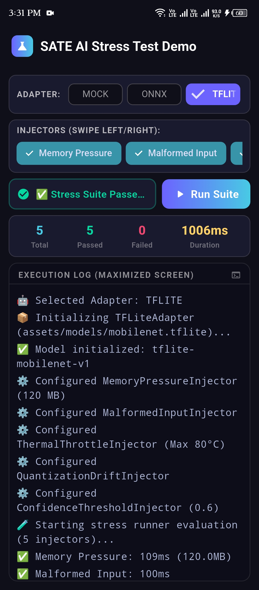
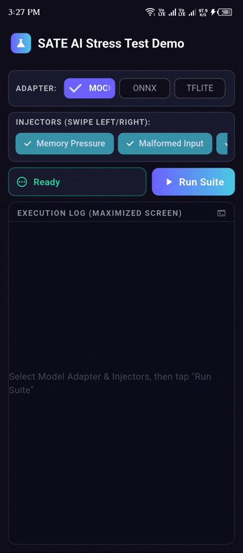
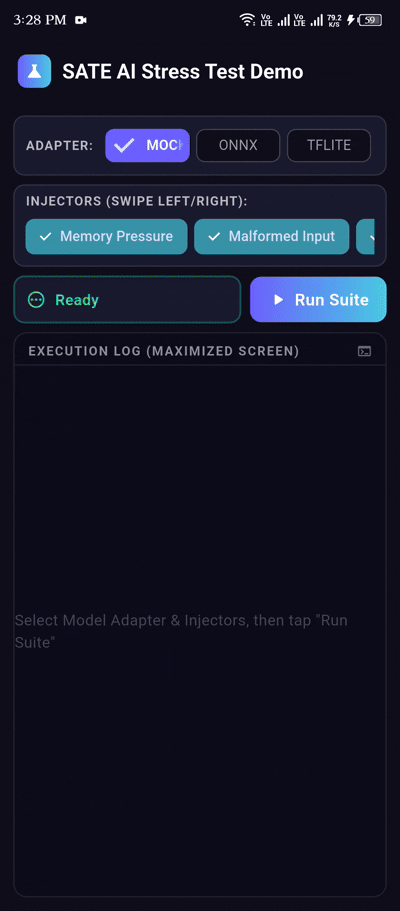

11 Fault Injectors
Simulate RAM/VRAM pressure, malformed inputs, quantization drift, thermal throttling, network latency drops, model swaps, and confidence validation.
A Fault Injection Framework for On-Device AI Models in Flutter
Catch failure scenarios, resource exhaustion, and model degradation before your users do.



End-to-end fault injection, benchmarking, scheduling, and regression tracking.
Simulate RAM/VRAM pressure, malformed inputs, quantization drift, thermal throttling, network latency drops, model swaps, and confidence validation.
Out-of-the-box support for Mock, ONNX Runtime, TensorFlow Lite, Fllama (llama.cpp), MediaPipe, Core ML, Google ML Kit, and custom runtimes.
Store historical test reports locally using pure-Dart SQLite (`sqflite_common_ffi`) and compare test runs against golden baselines.
Generate SVG badges (status, latency, memory, tests) for READMEs and render custom JSON/YAML report templates for team webhooks.
Start a real-time SSE monitoring server (`sate_ai serve --port 8080`) to stream live stress test metrics to dashboards.
Automatically retry transient failures and identify flaky test steps to maintain high CI signal quality.
Comprehensive coverage across on-device AI runtimes and failure modes.
Injects artificial RAM allocation pressure up to limit MB.
Feeds empty, oversized (1MB), and binary garbage inputs.
Simulates cumulative precision degradation over repeated steps.
Simulates mobile device CPU throttling and heat step escalation.
Injects artificial latency delays to test fallback paths.
Swaps model quality dynamically to evaluate alternative runtimes.
Simulates network latency drops, timeouts, and disconnections.
Validates confidence threshold boundaries on predictions.
Simulates GPU VRAM exhaustion scenarios.
Injects noise, blur, and bit glitches into input payloads.
Simulates model schema mismatches and fallback handlers.
Pure-Dart mock runtime supporting simulated memory and faults.
Backed by `onnxruntime` for cross-platform ONNX models.
Backed by `tflite_flutter` for MobileNet, ResNet, and TFLite.
Backed by `fllama` (llama.cpp) for Llama, Phi, and Gemma.
Google MediaPipe adapter for computer vision tasks.
Apple Core ML adapter for native iOS model runtimes.
Google ML Kit adapter for on-device Vision/NLP APIs.
Extend `AIModelAdapter` to wrap any custom native engine.
Execute stress tests, benchmarks, batch jobs, health checks, and history queries from command line.
sate_ai --model model.gguf --injectors memoryPressure,malformedInput --retry 3 --flaky-threshold 2sate_ai --model model.gguf --benchmark --benchmark-runs 20
sate_ai --models model1.onnx,model2.tflite,model3.gguf --auto-detectsate_ai --model model.gguf --db reports.db
sate_ai --db reports.db --db-history allsate_ai --model model.gguf --badge badge.svg --badge-type status
sate_ai --model model.gguf --template templates/slack.yaml --output custom_report.jsonExport self-contained HTML pages, persist historical records in SQLite, and render status badges.
Pure-Dart SQLite database engine (`ReportDatabase`) for saving and querying test runs across Flutter apps and CLI pipelines.
Generate Shields.io style status, latency, memory, and test ratio SVG badges to embed in project READMEs or CI artifacts.
Substitute placeholders like `{{ model }}`, `{{ passed_emoji }}`, `{{ memory_mb }}` in custom JSON/YAML templates for Slack/Teams alerts.
Run model stress tests directly from your IDE editor window.
Run stress tests with one click from model context menus, compare reports against golden baselines, and monitor real-time test progress directly inside VS Code.
View on VS Code MarketplaceExplore feature guides, API references, and theoretical background.
Complete Dart class and method reference hosted on pub.dev.
In-depth architectural overview, CLI options, and CI/CD workflow integration.
Guidelines for creating custom fault injectors, model adapters, and submitting PRs.
Read the research paper, architecture diagrams, and download PDF/LaTeX sources.
Guides for SQLite storage, badges, templates, benchmarks, and cron scheduling.
Sample Flutter app demonstrating multi-adapter and injector testing UI.